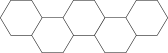

Sónar Reykjavik
Harpa Concert Hall
Ljusinstallation


Ett möte mellan arkitektur, form och elektronik. Installation som gav besökarna av Sonár Reykjavik 2017 en möjlighet att interagera med fasaden av Harpa Music Hall, beståendes utav 714 LED paneler. En elektronisk canvas som styrdes med hjälp av olika knappar man kunde trycka på och rotera för att få fram olika effekter (flash, twist, slide, colourise). Min del i det hela var att utveckla, designa och bygga ett fysiskt gränssnitt inspirerat av arkitekturen.


Utmaningen som gav mig mycket med detta var att jag kom in i projektet i sista minuten och behövde formge och förstå utan att tvivla på hur jag uppfattade saker. För mig var det viktigt att jag kunde ha kontroll över mitt material, både under processen och på plats, så jag gjorde olika materialtester och back-ups. Designen och språket i formgivningen är ett resultat av funktionen och diverse krav, samtidigt som jag ville att det skulle bli något eget. Bland annat var det viktig att det skulle finnas ett samspel med arkitekturen och att inget fick komma ivägen för tekniken, utan skulle lyfta dessa. Tekniken finns placerad i formerna på mina strukturer och är trådlöst kopplade till datorerna. Material: betong+pigment, svart MDF